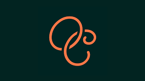

Function Health
Senior Medical AI Engineer leading medical AI R&D across architecture, guardrails, and evaluation design. Focused on building safer, production-ready AI systems and deployment governance for preventive health workflows.

AlphaROC
Developed seasonality analysis of financial transactions; created ML-based price forecasts and valuations for futures and stocks; performed alternative data analytics and automated financial report scraping.
Open Dialogue Space
Science Director. Leading R&D of the digital mental health platform, launched interactive data-informed dashboards for mental health monitoring, semantic pipelines for crisis detection.
Dreamseer
Co-founder. Leveraged cutting-edge NLP and AI to develop an innovative dream analysis platform, advancing mental health insights through technology.

Safehaven Hedge Fund
On-chain analytics, macro-market analysis, quantitative trading and hedging strategies, communications with clients.

OhCleo
Built LLM-powered chatbots, thematic content tagging, and speech-to-text workflows to enhance user engagement and platform personalization.
Katharsis Journeys Ltd
Co-founder. Strategic wellness partnerships with academia, NLP solutions driving 40% revenue growth, recognized as "Best Psilocybin Retreats in Europe" by Healing Maps.

Karolinska Institutet
Leveraged big-data analytics to inform public health policies on substance use and global societal dynamics. Spearheaded large-scale mental health and well-being initiatives. Led a clinical trial investigating psilocybin-based treatment for depression.

Stavanger University Hospital
Developed ML tools for clinical data analysis and secured NOK 1.5M in research funding, established international collaborations.

Aging Research Center
Coordinated the €1M project funded by the European Research Council, investigating cognitive and neurobiological plasticity. Oversaw the full lifecycle of a clinical trial—from protocol development and coordination to data analysis and final reporting.